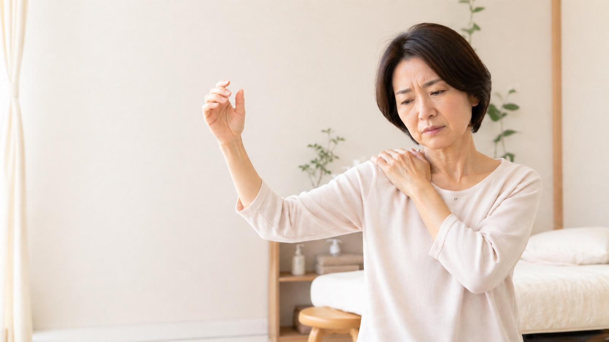

髪を結ぶ、背中に手を回す、上の棚に手を伸ばす。
日常の小さな動作のたびに、肩に走る痛み。
「年齢のせい」「そのうち治る」と言われ、何ヶ月も同じ痛みと付き合っていませんか。
四十肩・五十肩は、適切な時期に適切なケアを受けることで、回復の質と速さが大きく変わります。
DIRECTOR'S NOTE 院長より
病院で湿布と痛み止めをもらいながら数ヶ月様子を見ていたものの、夜間痛と可動域制限が続いて来院される方も少なくありません。当院では、肩だけでなく肩甲骨・背骨・骨盤・呼吸まで確認し、その方に合った回復の道筋をご提案しています。

「夜中に痛くて目が覚める」
「服の着替えがつらい」
「整形外科で年齢のせいと言われた」
このようなご相談は少なくありません。
肩関節は、肩甲骨・鎖骨・胸郭・背骨が連動して動く、人間の体でもっとも複雑な関節のひとつです。「肩だけ」を見ても入口を見つけにくく、湿布と痛み止めだけでは十分なケアにならないことがあります。
当院では、肩そのものはもちろん、その周辺と全身のバランスまで含めて確認しながら、いまどの時期にいるのかを見極めて整えていきます。
ひとつでも当てはまる方は、一度ご相談いただきたいと思います。「我慢すれば治る」と頑張ってこられた方ほど、回復までに時間がかかってしまうことがあります。
四十肩・五十肩は、医学的には「肩関節周囲炎」と呼ばれます。40代から60代の方に多く発症しますが、年齢で線が引かれているわけではなく、30代でも70代でも起こります。
肩関節は、人間の関節のなかでもっとも複雑で、もっとも広い動きを持つ関節です。腕を前に上げる、横に開く、後ろに回す、内外にひねる。これらの動作を、肩関節と肩甲骨、鎖骨、胸郭、背骨が連動して支えています。
「自然に治る」と言われることもありますが、実際には適切なケアをしないまま長引かせると、可動域がもとに戻らないまま固まってしまうことがあります。痛みが和らいだ後も、腕が完全に上がらない、後ろに回らないという状態が残ってしまう方も少なくありません。
だからこそ、「いまどの時期にいるのか」を見極めて、その時期に合った対応をすることが大切です。
肩のまわりで強い炎症が起きている時期です。じっとしていてもズキズキと痛み、夜間痛が出やすいのもこの段階です。「とにかく痛くて眠れない」というのは、多くがこの時期の症状です。
この時期に大切なのは、無理に動かさず、炎症を鎮めること。間違ったストレッチや強いマッサージは、かえって炎症を長引かせてしまいます。当院では、お体の状態を見ながら、痛みを和らげる鍼灸を中心に、安心して眠れる夜を取り戻すことを最優先に進めていきます。
安静時の痛みは少しずつ落ち着いてきますが、肩が動きにくくなる時期です。「痛くはないけど、腕が上がらない」「後ろに手を回せない」という状態が、もっとも長く続くのがこの段階です。
この時期は、関節包の柔軟性を取り戻し、肩甲骨・胸郭・背骨の動きを取り戻していくことが鍵になります。当院では、肩関節そのものだけでなく、肩甲下筋や胸椎など、肩の動きに深く関わる部分まで丁寧に確認して整えていきます。ここで諦めてしまうと、可動域が戻らないまま固定されてしまうことがあります。
少しずつ可動域が戻ってくる時期です。ただし「痛みが取れた＝治った」ではありません。動きの質を取り戻し、再発しにくい体に整えることが、この段階の目的です。
当院では、肩まわりの筋力バランス、姿勢、呼吸の深さ、栄養状態まで含めてサポートします。「もう片方の肩も同じようにならないように」という観点から、生活の見直しもご一緒に考えていきます。
肩関節は、肩甲骨・鎖骨・胸郭・背骨と連動して動いています。胸椎が硬い、肩甲骨が動かない、骨盤が歪んでいる──こうした体全体のバランスが整っていないと、肩への負担が抜けません。湿布やマッサージで一時的に楽になっても、根本の負担が残ったままだと、また同じ場所に痛みが戻ってきます。
急性期に強く動かすと、炎症が長引きます。逆に、拘縮期にじっとしていると、関節がそのまま固まってしまいます。時期に合わない対応を続けてしまうことで、回復が大幅に遅れるケースが多くあります。今ご自身がどの段階にいるのかを見極めて、それぞれに合った対応をしていくことが大切です。
体が修復するためには、たんぱく質・鉄・ビタミンD・マグネシウム・オメガ3など、さまざまな栄養素が必要です。睡眠の質、自律神経のバランスも回復のスピードを左右します。施術と並行して、これらの土台を整えることで、回復のペースが大きく変わってきます。
「いつまで続くのだろう」「もう治らないのでは」という不安そのものが、自律神経を緊張させ、痛みの感受性を高めます。痛みのある体に向き合いながら、安心して通える場所を持つこと、見通しを共有してもらえることは、それだけで回復の力になります。
ひとつの方法だけに頼らない。それが、回復への近道だと考えています。
肩関節周囲の経穴に加え、肝・脾・腎の経絡から全身を整え、気血の巡りを取り戻します。鍼の刺激は副交感神経が働きやすい状態をつくり、夜間痛で眠れない方の睡眠の質にも変化が出やすいアプローチです。
胸椎・肩甲骨・鎖骨の可動性、骨盤との連動を、三軸修正法を用いて整えます。肩関節そのものに直接強い刺激を加えるのではなく、肩を取り巻く環境から動きを取り戻していきます。
炎症が長引く方、回復が遅い方の多くに、栄養状態の偏りがあります。たんぱく質・鉄・ビタミンD・マグネシウム・オメガ3など、修復に必要な栄養素を食事の中でどう取り入れるかをご一緒に考えていきます。
時期に合わせた、ご自宅でできる運動とセルフケアをお伝えします。ジムスタッフ経験から得た運動指導の知見を活かし、無理なく続けられる範囲で、肩の動きを取り戻すサポートをします。
いまの症状、いつから始まったか、どんな動作でつらいか、お仕事や生活の様子、これまでの経過をお聞きします。お体の状態を確認したうえで、急性期・拘縮期・回復期のどの段階にいらっしゃるかを見立て、今後の道筋をお伝えします。
まずは強い痛みや夜間痛を落ち着けることを優先します。鍼灸を中心に、その方の状態に合わせて整体・運動指導を組み合わせていきます。初回後の数日のなかで、「夜の痛みが少し楽だった」と感じられる方もいらっしゃいます。
炎症が落ち着いてきたら、肩甲骨・胸郭・背骨を含めた全体の動きを丁寧に整えていきます。ご自宅で続けていただくセルフケアもお伝えしますので、施術日以外も少しずつ前進できます。
動きが戻ってきても、そこで終わりにせず、姿勢・呼吸・栄養・生活習慣まで含めて整えていきます。「もう片方の肩も同じようにならないために」「五年後も自由に動ける体でいるために」、長く付き合える健康の土台をご一緒につくります。
急性期で熱感や腫れがない場合、入浴や蒸しタオルで肩まわりをじんわりと温めます。血流が促され、緊張がほどけてきます。逆に、強い炎症で熱を持っているときは温めず、まずは安静にしてください。
テーブルに片手をつき、痛い方の腕を脱力してぶら下げます。そのまま、体をゆっくり前後・左右に揺らし、腕を振り子のように動かします。一日数回、無理のない範囲で。痛みが強く出る場合は中止してください。
鼻から4秒で吸い、口から8秒かけてゆっくり吐く。これを5回ほど繰り返します。呼吸が浅いと肩・首の補助呼吸筋が緊張し、肩への負担が増えます。一日数回、気づいたときに試してみてください。
※ セルフケアを2週間ほど続けても変化が乏しい場合、または痛みが強くなる場合は、自己判断を続けず一度ご相談ください。
はじめまして。八尾市堤町で「今西健はり・灸院」を一人で営んでいる、今西健と申します。
もともとはシステムエンジニアとして働いていましたが、人の体に関わる仕事をしたいという思いから、鍼灸師・柔道整復師の道へと進みました。鍼灸学校・柔道整復学校で学んだあと、ジムスタッフとして運動指導の現場も経験し、現在は東洋医学・カイロプラクティック・分子栄養学・運動指導を組み合わせた施術を行っています。
四十肩・五十肩でいらっしゃる方の多くは、長く我慢されてきた方です。「肩だけ見て湿布で終わり」ではなく、なぜ肩に痛みが出ているのかを、お体全体から丁寧に見させていただきたいと思っています。
一人で営んでいる院ですので、初診には90分ほどお時間をいただき、急かさずじっくりお話を伺います。「相談だけでも大丈夫だろうか」という方も、どうぞ気兼ねなくお越しください。
QUALIFICATIONS 保有資格・学んできた領域
初診はじっくりお話を伺うため、およそ90分お時間をいただいています。
現在のお悩み、これまでの経過、生活習慣などをお書きください。
いつから、どんな動作で痛むか、夜の眠りの状態など、丁寧にお聞きします。
肩関節の可動域、姿勢、背骨・骨盤の状態を確認し、いまの段階を見立てます。
その方の状態に合わせ、鍼灸・整体を組み合わせて行います。
今後の見通し、ご自宅でのケア、次回までに気をつけたい点をお伝えします。
当院では、お話を伺ったうえで「医療機関の受診を先にされたほうがよい」と判断した場合は、はっきりとそうお伝えしています。鍼灸で対応する状態か、検査が必要な状態かの見極めも、私たちの役割のひとつだと考えています。
四十肩・五十肩に対する鍼灸については、海外でも複数の研究が行われています。2020年のシステマティックレビュー・メタ解析では、鍼灸が痛みの軽減、肩の機能改善、腕を前に上げる可動域の改善に役立つ可能性が示されています。また、運動療法に鍼灸を組み合わせたランダム化比較試験では、運動療法のみの場合よりも肩の機能改善が大きかったと報告されています。
ただし、研究の質にはばらつきがあるため、「鍼だけで必ず治る」と考えるのではなく、痛みの時期、肩関節の硬さ、首・背中・肋骨・姿勢、自律神経や回復力まで含めて、全身から整えていくことが大切です。
以下は、四十肩・五十肩（Frozen Shoulder / Adhesive Capsulitis）に対する鍼灸の代表的な海外論文です。表現は「絶対に効く」ではなく、「痛みや動かしやすさの改善に役立つ可能性が示されている」段階としてご理解ください。
The Effectiveness of Acupuncture in the Treatment of Frozen Shoulder: A Systematic Review and Meta-Analysis
四十肩・五十肩に対する鍼灸の研究をまとめたシステマティックレビュー・メタ解析。痛み・肩の機能・屈曲可動域で、鍼灸群が対照群より良い結果を示したと報告。一方で「エビデンスの質はvery low」と明記されており、より質の高い研究が必要とされています。
論文を確認 →Acupuncture for frozen shoulder（Hong Kong Medical Journal）
四十肩・五十肩患者35名を、運動療法のみ群と運動療法＋鍼灸群に分けたランダム化比較試験。6週間後、運動療法のみ群が39.8%改善に対し、運動療法＋鍼灸群は76.4%改善。20週後もその差が維持され、「鍼灸と肩の運動療法の組み合わせは有効な治療になり得る」と結論。
論文を確認 →Efficacy of Combining Acupuncture and Physical Therapy for the Management of Patients With Frozen Shoulder（Pain Management Nursing）
2024年のシステマティックレビュー・メタ解析。鍼灸と理学療法の併用は、理学療法単独よりも痛み・臨床的有効率・能動受動可動域の改善で有効だったと報告されています。
論文を確認 →Immediate Pain Relief in Adhesive Capsulitis by Acupuncture — A Randomized Controlled Double-Blinded Study（Pain Medicine）
原発性肩関節拘縮（adhesive capsulitis）患者60名を対象に、圧痛点へのpress tack needle（皮内鍼に近い方法）とプラセボを比較した、患者・評価者盲検のランダム化比較試験。即時的な痛みの軽減が検討されています。
PubMed で確認 →Acupuncture for Chronic Pain: Update of an Individual Patient Data Meta-Analysis（Journal of Pain）
肩痛を含む慢性痛全般を対象とした、39試験・20,827名の大規模個人データメタ解析。鍼灸は偽鍼や無治療対照よりも慢性痛に対して有効で、効果は時間経過後も一定程度持続すると結論。四十肩・五十肩専用ではないが、慢性痛全体の文脈の補強として参照しやすい。
論文を確認 →お体の状態によって幅があります。急性期で来られた方の中には、数回の施術で夜間痛の変化を感じられる方もいらっしゃいます。可動域がしっかり戻るまでは、週1回ペースで2〜3ヶ月通っていただくのが目安です。初診時に、その方に合わせた見通しをお伝えしますので、無理のないペースで通っていただけます。
注射針とは違い、鍼灸用の鍼は髪の毛ほどの細さです。チクッと感じる方もいらっしゃいますが、刺さってしまえば気にならない方がほとんどです。怖い方には、刺さない鍼や、最小限の本数から始めることもできます。お気軽にご相談ください。
年齢は要素のひとつではありますが、それだけで決まるものではありません。実際に、60代・70代の方でも、適切な時期に適切なケアを行うことで肩の動きを取り戻されています。「もう年だから」と諦めるのは、まだ早いかもしれません。
痛み止めを服用中でも施術は可能です。服薬中であることを問診時にお伝えいただければ、その状態を踏まえて施術内容を調整します。施術を続けるなかで、徐々に薬の頻度が減っていく方も多くいらっしゃいます。減薬・断薬については必ず処方された医師にご相談ください。
糖尿病、高血圧、心臓疾患などの既往がある方も、多くの場合施術を受けていただけます。現在の状態と通院・服薬状況をお伺いし、安全に行える範囲で進めます。気になることがあれば、ご予約時にお気軽にお尋ねください。
当院は自費施術を中心としています。保険診療よりも一回あたりのご負担はありますが、その分一人ひとりに丁寧にお時間をかけ、肩だけでなく全身を見させていただいています。料金の詳細は、ホームページの料金ページをご覧ください。
空きがあれば当日のご予約も承っています。お電話（072-998-7474）またはLINE（ID: takeshityan）でご連絡ください。一人で営業しているため、施術中はお電話に出られないことがあります。LINEでのご予約のほうが確実です。
その肩の痛み、
ひとりで抱え込まないでください。
四十肩・五十肩は、適切な時期に適切なケアを受けることで、回復のスピードと質が変わってきます。
「相談だけでも」という方も、お気軽にご連絡ください。
今西健はり・灸院 〒581-0814 大阪府八尾市堤町2-30-59
LINE ID: takeshityan